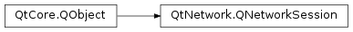
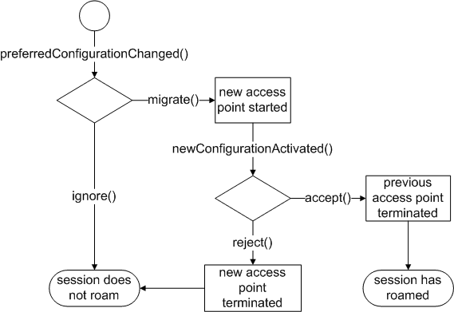

QNetworkSession¶
Note
This class was introduced in Qt 4.7.
Synopsis¶
Functions¶
- def
activeTime() - def
bytesReceived() - def
bytesWritten() - def
configuration() - def
error() - def
errorString() - def
interface() - def
isOpen() - def
sessionProperty(key) - def
setSessionProperty(key, value) - def
state() - def
usagePolicies() - def
waitForOpened([msecs=30000])
Slots¶
Signals¶
- def
closed() - def
error(arg__1) - def
newConfigurationActivated() - def
opened() - def
preferredConfigurationChanged(config, isSeamless) - def
stateChanged(arg__1) - def
usagePoliciesChanged(usagePolicies)
Detailed Description¶
The
PySide2.QtNetwork.QNetworkSessionclass provides control over the system’s access points and enables session management for cases when multiple clients access the same access point.A
PySide2.QtNetwork.QNetworkSessionenables control over the system’s network interfaces. The session’s configuration parameter are determined via thePySide2.QtNetwork.QNetworkConfigurationobject to which it is bound. Depending on the type of the session (single access point or service network) a session may be linked to one or more network interfaces. By means ofopeningandclosingof network sessions a developer can start and stop the systems network interfaces. If the configuration represents multiple access points (seeQNetworkConfiguration.ServiceNetwork) more advanced features such as roaming may be supported.
PySide2.QtNetwork.QNetworkSessionsupports session management within the same process and depending on the platform’s capabilities may support out-of-process sessions. If the same network configuration is used by multiple open sessions the underlying network interface is only terminated once the last session has been closed.
Roaming¶
Applications may connect to the
PySide2.QtNetwork.QNetworkSession.preferredConfigurationChanged()signal in order to receive notifications when a more suitable access point becomes available. In response to this signal the application must either initiate the roaming viaPySide2.QtNetwork.QNetworkSession.migrate()orPySide2.QtNetwork.QNetworkSession.ignore()the new access point. Once the session has roamed thePySide2.QtNetwork.QNetworkSession.newConfigurationActivated()signal is emitted. The application may now test the carrier and must eitherPySide2.QtNetwork.QNetworkSession.accept()orPySide2.QtNetwork.QNetworkSession.reject()it. The session will return to the previous access point if the roaming was rejected. The subsequent state diagram depicts the required state transitions.Some platforms may distinguish forced roaming and application level roaming (ALR). ALR implies that the application controls (via
PySide2.QtNetwork.QNetworkSession.migrate(),PySide2.QtNetwork.QNetworkSession.ignore(),PySide2.QtNetwork.QNetworkSession.accept()andPySide2.QtNetwork.QNetworkSession.reject()) whether a network session can roam from one access point to the next. Such control is useful if the application maintains stateful socket connections and wants to control the transition from one interface to the next. Forced roaming implies that the system automatically roams to the next network without consulting the application. This has the advantage that the application can make use of roaming features without actually being aware of it. It is expected that the application detects that the underlying socket is broken and automatically reconnects via the new network link.If the platform supports both modes of roaming, an application indicates its preference by connecting to the
PySide2.QtNetwork.QNetworkSession.preferredConfigurationChanged()signal. Connecting to this signal means that the application wants to take control over the roaming behavior and therefore implies application level roaming. If the client does not connect to thePySide2.QtNetwork.QNetworkSession.preferredConfigurationChanged(), forced roaming is used. If forced roaming is not supported the network session will not roam by default.Some applications may want to suppress any form of roaming altogether. Possible use cases may be high priority downloads or remote services which cannot handle a roaming enabled client. Clients can suppress roaming by connecting to the
PySide2.QtNetwork.QNetworkSession.preferredConfigurationChanged()signal and answer each signal emission withPySide2.QtNetwork.QNetworkSession.ignore().
-
class
PySide2.QtNetwork.QNetworkSession(connConfig[, parent=nullptr])¶ Parameters: - connConfig –
PySide2.QtNetwork.QNetworkConfiguration - parent –
PySide2.QtCore.QObject
Constructs a session based on
connectionConfigwith the givenparent.- connConfig –
-
PySide2.QtNetwork.QNetworkSession.State¶ This enum describes the connectivity state of the session. If the session is based on a single access point configuration the state of the session is the same as the state of the associated network interface.
Constant Description QNetworkSession.Invalid The session is invalid due to an invalid configuration. This may happen due to a removed access point or a configuration that was invalid to begin with. QNetworkSession.NotAvailable The session is based on a defined but not yet discovered PySide2.QtNetwork.QNetworkConfiguration(seeQNetworkConfiguration.StateFlag).QNetworkSession.Connecting The network session is being established. QNetworkSession.Connected The network session is connected. If the current process wishes to use this session it has to register its interest by calling PySide2.QtNetwork.QNetworkSession.open(). A network session is considered to be ready for socket operations if itPySide2.QtNetwork.QNetworkSession.isOpen()and connected.QNetworkSession.Closing The network session is in the process of being shut down. QNetworkSession.Disconnected The network session is not connected. The associated PySide2.QtNetwork.QNetworkConfigurationhas the stateQNetworkConfiguration.Discovered.QNetworkSession.Roaming The network session is roaming from one access point to another access point.
Note
This enum was introduced in Qt 4.7.
-
PySide2.QtNetwork.QNetworkSession.SessionError¶ This enum describes the session errors that can occur.
Constant Description QNetworkSession.UnknownSessionError An unidentified error occurred. QNetworkSession.SessionAbortedError The session was aborted by the user or system. QNetworkSession.RoamingError The session cannot roam to a new configuration. QNetworkSession.OperationNotSupportedError The operation is not supported for current configuration. QNetworkSession.InvalidConfigurationError The operation cannot currently be performed for the current configuration.
Note
This enum was introduced in Qt 4.7.
-
PySide2.QtNetwork.QNetworkSession.UsagePolicy¶ These flags allow the system to inform the application of network usage restrictions that may be in place.
Constant Description QNetworkSession.NoPolicy No policy in force, usage is unrestricted. QNetworkSession.NoBackgroundTrafficPolicy Background network traffic (not user initiated) should be avoided for example to save battery or data charges
-
PySide2.QtNetwork.QNetworkSession.accept()¶ Instructs the session to permanently accept the new access point. Once this function has been called the session may not return to the old access point.
The old access point may be closed in the process if there are no other network sessions for it. Therefore any open socket that still uses the old access point may become unusable and should be closed before completing the migration.
-
PySide2.QtNetwork.QNetworkSession.activeTime()¶ Return type: PySide2.QtCore.quint64Returns the number of seconds that the session has been active.
-
PySide2.QtNetwork.QNetworkSession.bytesReceived()¶ Return type: PySide2.QtCore.quint64Returns the amount of data received in bytes; otherwise 0.
This field value includes the usage across all open network sessions which use the same network interface.
If the session is based on a service network configuration the number of sent bytes across all active member configurations are returned.
This function may not always be supported on all platforms and returns 0. The platform capability can be detected via
QNetworkConfigurationManager.DataStatistics.Note
On some platforms this function may run the main event loop.
-
PySide2.QtNetwork.QNetworkSession.bytesWritten()¶ Return type: PySide2.QtCore.quint64Returns the amount of data sent in bytes; otherwise 0.
This field value includes the usage across all open network sessions which use the same network interface.
If the session is based on a service network configuration the number of sent bytes across all active member configurations are returned.
This function may not always be supported on all platforms and returns 0. The platform capability can be detected via
QNetworkConfigurationManager.DataStatistics.Note
On some platforms this function may run the main event loop.
-
PySide2.QtNetwork.QNetworkSession.close()¶ Decreases the session counter on the associated network configuration. If the session counter reaches zero the active network interface is shut down. This also means that
PySide2.QtNetwork.QNetworkSession.state()will only change fromConnectedtoDisconnectedif the current session was the last open session.If the platform does not support out-of-process sessions calling this function does not stop the interface. In this case
PySide2.QtNetwork.QNetworkSession.stop()has to be used to force a shut down. The platform capabilities can be detected viaQNetworkConfigurationManager.capabilities().Note that this call is asynchronous. Depending on the outcome of this call the results can be enquired by connecting to the
PySide2.QtNetwork.QNetworkSession.stateChanged(),PySide2.QtNetwork.QNetworkSession.opened()orPySide2.QtNetwork.QNetworkSession.error()signals.
-
PySide2.QtNetwork.QNetworkSession.closed()¶
-
PySide2.QtNetwork.QNetworkSession.configuration()¶ Return type: PySide2.QtNetwork.QNetworkConfigurationReturns the
PySide2.QtNetwork.QNetworkConfigurationthat this network session object is based on.
-
PySide2.QtNetwork.QNetworkSession.error(arg__1)¶ Parameters: arg__1 – PySide2.QtNetwork.QNetworkSession.SessionError
-
PySide2.QtNetwork.QNetworkSession.error() Return type: PySide2.QtNetwork.QNetworkSession.SessionErrorReturns the type of error that last occurred.
-
PySide2.QtNetwork.QNetworkSession.errorString()¶ Return type: unicode Returns a human-readable description of the last device error that occurred.
-
PySide2.QtNetwork.QNetworkSession.ignore()¶ This function indicates that the application does not wish to roam the session.
-
PySide2.QtNetwork.QNetworkSession.interface()¶ Return type: PySide2.QtNetwork.QNetworkInterfaceReturns the network interface that is used by this session.
This function only returns a valid
PySide2.QtNetwork.QNetworkInterfacewhen this session isConnected.The returned interface may change as a result of a roaming process.
-
PySide2.QtNetwork.QNetworkSession.isOpen()¶ Return type: PySide2.QtCore.boolReturns
trueif this session is open. If the number of all open sessions is greater than zero the underlying network interface will remain connected/up.The session can be controlled via
PySide2.QtNetwork.QNetworkSession.open()andPySide2.QtNetwork.QNetworkSession.close().
-
PySide2.QtNetwork.QNetworkSession.migrate()¶ Instructs the session to roam to the new access point. The old access point remains active until the application calls
PySide2.QtNetwork.QNetworkSession.accept().The
PySide2.QtNetwork.QNetworkSession.newConfigurationActivated()signal is emitted once roaming has been completed.
-
PySide2.QtNetwork.QNetworkSession.newConfigurationActivated()¶
-
PySide2.QtNetwork.QNetworkSession.open()¶ Creates an open session which increases the session counter on the underlying network interface. The system will not terminate a network interface until the session reference counter reaches zero. Therefore an open session allows an application to register its use of the interface.
As a result of calling the interface will be started if it is not connected/up yet. Some platforms may not provide support for out-of-process sessions. On such platforms the session counter ignores any sessions held by another process. The platform capabilities can be detected via
QNetworkConfigurationManager.capabilities().Note that this call is asynchronous. Depending on the outcome of this call the results can be enquired by connecting to the
PySide2.QtNetwork.QNetworkSession.stateChanged(),PySide2.QtNetwork.QNetworkSession.opened()orPySide2.QtNetwork.QNetworkSession.error()signals.It is not a requirement to open a session in order to monitor the underlying network interface.
-
PySide2.QtNetwork.QNetworkSession.opened()¶
-
PySide2.QtNetwork.QNetworkSession.preferredConfigurationChanged(config, isSeamless)¶ Parameters: - config –
PySide2.QtNetwork.QNetworkConfiguration - isSeamless –
PySide2.QtCore.bool
- config –
-
PySide2.QtNetwork.QNetworkSession.reject()¶ The new access point is not suitable for the application. By calling this function the session returns to the previous access point/configuration. This action may invalidate any socket that has been created via the not desired access point.
-
PySide2.QtNetwork.QNetworkSession.sessionProperty(key)¶ Parameters: key – unicode Return type: object Returns the value for property
key.A network session can have properties attached which may describe the session in more details. This function can be used to gain access to those properties.
The following property keys are guaranteed to be specified on all platforms:
Key Description ActiveConfiguration If the session
PySide2.QtNetwork.QNetworkSession.isOpen()this property returns the identifier of thePySide2.QtNetwork.QNetworkConfigurationthat is used by this session; otherwise an empty string.The main purpose of this key is to determine which Internet access point is used if the session is based on a
ServiceNetwork. The following code snippet highlights the difference:QNetworkConfigurationManager mgr; QNetworkConfiguration ap = mgr.defaultConfiguration(); QNetworkSession *session = new QNetworkSession(ap); ... //code activates session QString ident = session->sessionProperty("ActiveConfiguration").toString(); if ( ap.type() == QNetworkConfiguration::ServiceNetwork ) { Q_ASSERT( ap.identifier() != ident ); Q_ASSERT( ap.children().contains( mgr.configurationFromIdentifier(ident) ) ); } else if ( ap.type() == QNetworkConfiguration::InternetAccessPoint ) { Q_ASSERT( ap.identifier() == ident ); }
UserChoiceConfiguration If the session
PySide2.QtNetwork.QNetworkSession.isOpen()and is bound to aPySide2.QtNetwork.QNetworkConfigurationof type UserChoice, this property returns the identifier of thePySide2.QtNetwork.QNetworkConfigurationthat the configuration resolved to whenPySide2.QtNetwork.QNetworkSession.open()was called; otherwise an empty string.The purpose of this key is to determine the realPySide2.QtNetwork.QNetworkConfigurationthat the session is using. This key is different from ActiveConfiguration in that this key may return an identifier for either aservice networkor aInternet access pointsconfigurations, whereas ActiveConfiguration always returns identifiers toInternet access pointsconfigurations.ConnectInBackground Setting this property to true before calling PySide2.QtNetwork.QNetworkSession.open()implies that the connection attempt is made but if no connection can be established, the user is not connsulted and asked to select a suitable connection. This property is not set by default and support for it depends on the platform.AutoCloseSessionTimeout If the session requires polling to keep its state up to date, this property holds the timeout in milliseconds before the session will automatically close. If the value of this property is -1 the session will not automatically close. This property is set to -1 by default.
The purpose of this property is to minimize resource use on platforms that use polling to update the state of the session. Applications can set the value of this property to the desired timeout before the session is closed. In response to thePySide2.QtNetwork.QNetworkSession.closed()signal the network session should be deleted to ensure that all polling is stopped. The session can then be recreated once it is required again. This property has no effect for sessions that do not require polling.
-
PySide2.QtNetwork.QNetworkSession.setSessionProperty(key, value)¶ Parameters: - key – unicode
- value – object
Sets the property
valueon the session. The property is identified usingkey. Removing an already set property can be achieved by passing an invalidPySide2.QtCore.QVariant.Note that the UserChoiceConfiguration and ActiveConfiguration properties are read only and cannot be changed using this method.
-
PySide2.QtNetwork.QNetworkSession.state()¶ Return type: PySide2.QtNetwork.QNetworkSession.StateReturns the state of the session.
If the session is based on a single access point configuration the state of the session is the same as the state of the associated network interface. Therefore a network session object can be used to monitor network interfaces.
A
QNetworkConfiguration.ServiceNetworkbased session summarizes the state of all its children and therefore returns theConnectedstate if at least one of the service network’sPySide2.QtNetwork.QNetworkConfiguration.children()configurations is active.Note that it is not required to hold an open session in order to obtain the network interface state. A connected but closed session may be used to monitor network interfaces whereas an open and connected session object may prevent the network interface from being shut down.
-
PySide2.QtNetwork.QNetworkSession.stateChanged(arg__1)¶ Parameters: arg__1 – PySide2.QtNetwork.QNetworkSession.State
-
PySide2.QtNetwork.QNetworkSession.stop()¶ Invalidates all open sessions against the network interface and therefore stops the underlying network interface. This function always changes the session’s
PySide2.QtNetwork.QNetworkSession.state()flag toDisconnected.
-
PySide2.QtNetwork.QNetworkSession.usagePolicies()¶ Return type: PySide2.QtNetwork.QNetworkSession.UsagePoliciesReturns the network usage policies currently in force by the system.
-
PySide2.QtNetwork.QNetworkSession.usagePoliciesChanged(usagePolicies)¶ Parameters: usagePolicies – PySide2.QtNetwork.QNetworkSession.UsagePolicies
-
PySide2.QtNetwork.QNetworkSession.waitForOpened([msecs=30000])¶ Parameters: msecs – PySide2.QtCore.intReturn type: PySide2.QtCore.boolWaits until the session has been opened, up to
msecsmilliseconds. If the session has been opened, this function returnstrue; otherwise it returnsfalse. In the case where it returnsfalse, you can callPySide2.QtNetwork.QNetworkSession.error()to determine the cause of the error.The following example waits up to one second for the session to be opened:
session->open(); if (session->waitForOpened(1000)) qDebug("Open!");
If
msecsis -1, this function will not time out.
© 2018 The Qt Company Ltd. Documentation contributions included herein are the copyrights of their respective owners. The documentation provided herein is licensed under the terms of the GNU Free Documentation License version 1.3 as published by the Free Software Foundation. Qt and respective logos are trademarks of The Qt Company Ltd. in Finland and/or other countries worldwide. All other trademarks are property of their respective owners.